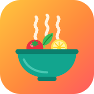

מצלמים מתכון מספר או מחוברת, בוחרים קובץ PDF או מדביקים קישור. הרכיבים ואופן ההכנה ימולאו לבד.
מוסיפים את האפליקציה למסך הבית, והיא נפתחת כמו כל אפליקציה אחרת.
המתכונים שמורים בטלפון הזה בלבד. כדאי לשמור קובץ גיבוי מדי פעם (למשל בגוגל דרייב), ואיתו אפשר גם להעביר את המתכונים לטלפון חדש.
גרסה 5 · תיקיות צבעוניות